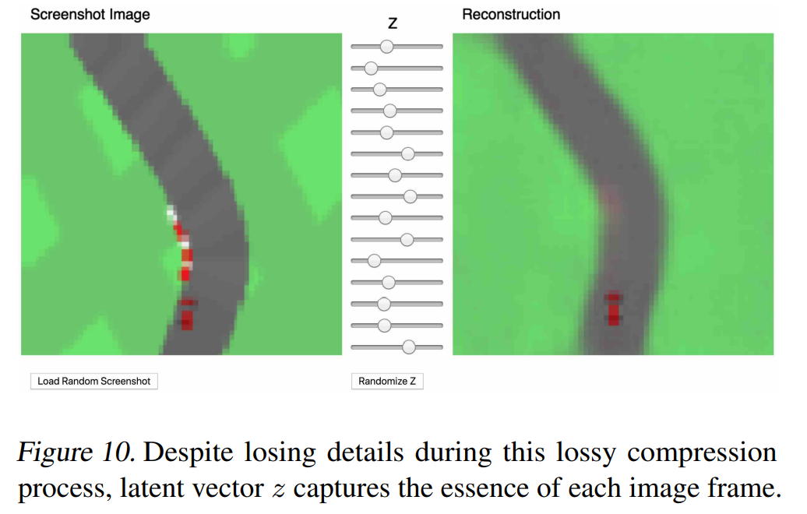
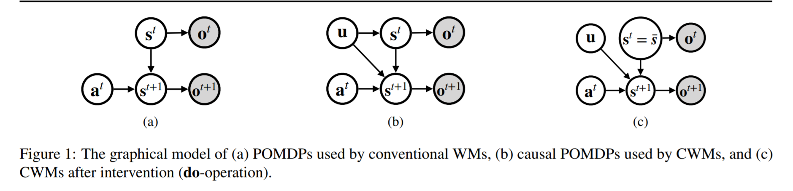

Causal on MBRL/world model
在目前看到的工作里，似乎没有明确公认的benchmark（用什么env的都有）；用在机械臂、小球碰撞这种有明确物理意义下的环境居多
MuZero 和 EfficientZero暂时不细整理了。。后面如果有被作为其他工作的baseline再补上
Imagination-Augmented Agents for Deep Reinforcement Learning(1707.06203)
Motivation&Method
认为trajectory包含了reward以外的更多信息，因此构造了以下的data-augmentation结构：
c)图中表示对每个ot，model-based path会用encoder处理出它的所有at+1的embed，然后concat起来和model-free path一起，得到π,V
图中π^是environment model训出来的，结构如下：
architecture：CNN+LSTM
method：A3C
Experiment
实验环境：sokoban, minipacman
用来训练environment model的数据是通过先train一个policy来采样收集的，给出的解释是初始化的纯随机策略得到的reward太稀疏，不好训
主要做了几个实验：
1.unroll length& performance
performance选agent中最好三个的平均
说明比没有增强的要好，以及在结构中向前预测的步数越多，表现越好（左图和后续实验选择的depth=5）
2.imperfect model
试图说明这个结构对表现差的environment model也是robust的，good/poor的区别是训练的environment model 的表现，poor参数量和训练轮数会少一些
- 其他:data-efficiency& multi-task，略，只是和没有这个trick的相同结构做了对比，感觉没有说服力
总结：
可能因为是较早的工作，没有看到太多的benchmark和method，对比方法也只有A3C，感觉至少还是要和一些data-augmentation的工作对比一下？
有一些解释其实有点牵强，比如实验2.对poor network的解释
算是一个早期做world model的工作
World Models(1803.10122)
总结：
现在来看没有很搞懂这篇为什么在参数量上比较执着；实验中可以看到对环境的建模并不完善，可能model生成的frame之间并不能体现原来env的逻辑，因此会被agent钻空子，可能是VAE+RNN这样的设计太容易产生偏差了
模型只通过random policy进行sample得到high performance的结果看起来很厉害，但1.baseline相比现在的sota较弱 2.Env现在用的也比较少 3.没给具体训的参数，可能实际上训练时用的iter/数据量比baseline大
Motivation&Method
主要思想是将模型分为model和controller两部分，model负责对环境的拟合，controller负责作为policy，从model得到的embedding中决定action；这样区分部分的目的是为了让model有能力通过各种训练/迁移等很好地近似环境，controller则基于自身的小参数量快速训练/处理下游任务
文章以模型整体的参数量和performance作为指标
将模型分为V,M,C(vision, memory, controller)三部分，分别用VAE作为pixels的编码、RNN作为memory model, MLP作为policy进行训练
RNN的工作是对输入的zt，预测其zt+1；输出的是概率p(z)以进行抽样，即MDN-RNN拟合的是p(zt+1∣at,zt,ht),τ 为温度系数，控制输出的随机程度
Experiment
评估指标：参数量baseline为SIMPLE，performance baseline A3C,DQN
Env: Car Racing, VizDoom
训练：10000个random policy生成的frame来train VAE，再用VAE的latent embedding+action训练RNN；得到V+M的model后，用model作为环境训Controller
Controller额外用了CMA-ES（参数量过小所以用了启发式算法优化）
ps：VAE生成的图很VAE,很糊，后面工作会看到对这个东西的优化

其他内容
这种训练方式显然可以迭代地在model和env之间切换训练，文章后续也有简述；和EfficientZero这种使用model trajectory并截断用env true step/obs代替的方式有些不同，也许后续会用到。
Smaller World Models for Reinforcement Learning(2010.05767)
总结：基本上是上一篇的全面升级版，相比上一篇用了VQ-VAE+LSTM，benchmark换到了Atari 100K，baseline还是SimPLe和PPO，实验细节也完善很多。文章高强度cue这篇SIMPLE: MODEL BASED REINFORCEMENT LEARNING FOR ATARIhttps://arxiv.org/pdf/1903.00374.pdf，并且PPO的结果是从这里引的。
Motivation&Method
表示和计算图，zt,yt都是latent variable
一样分两部分，model和Controller(agent)
结构：以下几个部分，VQ-VAE包含Encoder，Decoder
model的结构，VQ-VAE生成二维编码以表示空间关系：
训练：与真实env进行6400step*15iter的交互，仍然是VQ-VAE先训，50epoch*6400frame，之后VQ-VAE参数只在偶数步更新；
声称VQ-VAE的使用是为了避免VAE中KL loss受环境影响较大的问题，同时scale down the cross-entropy loss of the rewards and using a higher learning rate for the reward prediction head，以尽快拟合reward prediction head,减小这部分预测偏差对模型训练产生的波动
Experiments
比较有用的发现是， SimPLe和本篇都出现结果受seed影响且很大的问题（其他参数fixed），作者认为原因是1.model因为看到的数据比较少，没有办法预测没见过的state；2.算法交互次数比较少(100k)，模型结果对探索-利用很敏感；
learning curve
简单看下整体表现，虽然声称是20 out of 36 better than SimPLe，但是感觉看不太出来和baseline比哪个更好。。
Causal World Models by Unsupervised Deconfounding of Physical Dynamics(2012.14228)
总结:整体来看感觉method没什么问题，可能有拓展到其他env的机会；CRM的loss比较像是ITE，但doubly robust在causal inference中的地位不清楚，不知道能不能有改进空间，也不知道能不能体现出比另开一个predictor好在哪（比如更robust/更真实，或者能更好的让模型去学概率图）；
Motivation&Method
Causal POMDP
引入Causal之后，对world model的理解变成了这样：

意思是说原来都是在拟合p(st+1∣at,st=f(ot))，没有考虑隐变量u：比如重力等env中的常量
结构：
CWM(Causal World Model)
ps:我理解这部分causal/intervention是体现在使用dream world上，CRM部分体现couterfactual
Object Extractor and Encoder，还是conv encoder，作用是将obs转为K∗S的state，K表示env中实际包含的物体数量（文章中在几个实验中取了2~6）
Trainsition部分是个GNN,对边上和节点上embedding的处理各自有一个MLP，边之间和节点之间共享参数；消息传递取边所连结点的concat embedding
Confounder Estimator是个RNN+GRU，每个时间t的参数共享
Loss:对buffer中的样本，定义能量函数
H=k1∑k=1Kd(fcomb(skt,ftrans(st)k),skt+1)
H~=k1∑k=1Kd(s~kt,skt+1)
s~表示从buffer中随便抽的某个样本，fcomb,ftrans是GNN中边和节点的两个MLP
L=H+max(0,γ−H~)
CRM-CWM(Counterfactual Risk Minimization)
“Inspired by the doubly robust (DR) estimator”，将上式L的H替换为了
s^DRt+1(st)=p(s0)O(s=s0∣t0)(st+1−st−f^trans(st))+(st+f^trans(st))
H=k1∑k=1Kd(s^DRt+1,skt+1)
O是指示函数，仅当s=st时取1；后续证明了E[s^DRt+1]=st+1；p(s0)是历史样本中s0的分布
整体相当于套了couterfactual/doubly robust的壳子，额外提供了一个s^让网络去拟合
Experiments
文章对比的baseline见这个https://zhuanlan.zhihu.com/p/138879646，和本篇的网络结构很像
benchmark：CoPhy, PHYRE
训练过程：random policy 收集700 episode* 29 step for training, 300episode*29 steps for test作为buffer
文中称参数量比较大，batchsize只开到了25
实验结果两部分，一个是对比baseline比较估计的位置:
另一个是和model-free方法对比，体现sample-efficiency：
预测的counterfactual trajectory vs实际情况(after PCA)：
Causal Curiosity: RL Agents Discovering Self-supervised Experiments for Causal Representation Learning(2010.03110)